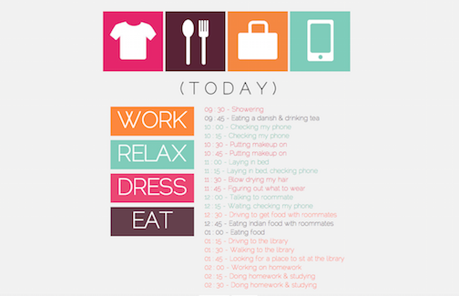

JANUARY 27 2016
EXERCISE 3 FINAL DESIGN
In this exercise, I made sure the website was engaging visually through the use of a grid-like structure. Having it organized in a simple way helps the user to figure out how to navigate the website more easily. I also included brighter colors and small icons to give a fun aspect to the overall design. The interaction I used was by hiding the recorded activities. But with the user seeing the hover effect on the big words, their next instinct (hopefully) is to click on it ultimately revealing the different activities that fall under the category. In addition, double clicking on the words hides the activities in the category. By keeping the interactivity and design simple, users will be able to use the website more comfortably.